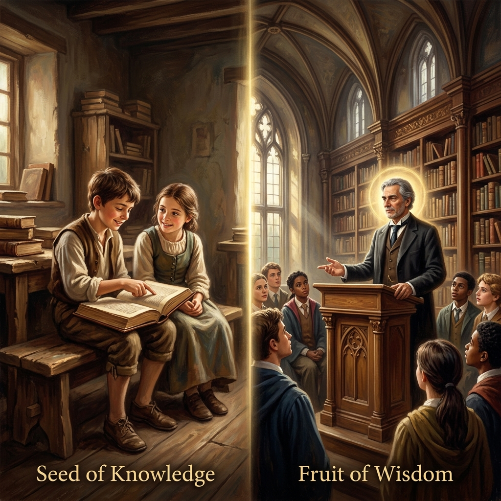

La Generosidad del ConocimientoThe Generosity of KnowledgeLa Generosità della Conoscenza知识的慷慨سخاء المعرفةЩедрость знанийDie Großzügigkeit des WissensLa générosité du savoir知識の寛大さA Generosidade do ConhecimentoSự Hào Phóng Của Tri Thức
Quien comparte su sabiduría sin reservas, renace con una mente luminosa, capaz de comprender en un instante lo que a otros les lleva años alcanzar.He who shares his wisdom without reservation, is reborn with a luminous mind, capable of understanding in an instant what takes others years to achieve.Chi condivide la propria saggezza senza riserve, rinasce con una mente luminosa, capace di comprendere in un istante ciò che agli altri richiede anni per essere raggiunto.毫无保留地分享智慧的人，重生时将拥有一颗明亮的头脑，能够瞬间理解他人需要多年才能达到的成就。من يشارك حكمته دون تحفظ، يولد من جديد بعقل منير، قادر على فهم ما يستغرق الآخرون سنوات لتحقيقه في لحظة.Тот, кто без остатка делится своей мудростью, возрождается с сияющим умом, способным мгновенно постигать то, на что у других уходят годы.Wer seine Weisheit ohne Vorbehalt teilt, wird mit einem leuchtenden Geist wiedergeboren, der in einem Augenblick zu verstehen vermag, wofür andere Jahre brauchen.Celui qui partage sa sagesse sans réserve renaît avec un esprit lumineux, capable de comprendre en un instant ce que les autres mettent des années à atteindre.自分の知恵を惜しみなく分かち合う者は、他の人が達成するのに何年もかかることを瞬時に理解できる、輝かしい精神を持って生まれ変わります。Quem compartilha sua sabedoria sem reservas, renasce com uma mente luminosa, capaz de compreender em um instante o que outros levam anos para alcançar.Ai chia sẻ trí tuệ của mình mà không giấu giếm, sẽ tái sinh với một trí tuệ sáng suốt, có khả năng thấu hiểu trong tích tắc những điều mà người khác phải mất nhiều năm mới đạt được.
El conocimiento es la única riqueza que se multiplica cuando se comparte. En el tejido del karma, ocultar la verdad o negar la enseñanza a quien la busca es un acto de egoísmo que oscurece el propio entendimiento en vidas futuras. Por el contrario, aquel que se convierte en un faro para los demás, explicando con paciencia y alegría lo que sabe, está abriendo las puertas de su propia percepción universal.
La ley kármica premia la difusión de la luz. Quien enseña de corazón, sin buscar ventaja ni guardarse 'secretos' para mantener poder sobre otros, siembra en su propia conciencia la semilla de la intuición superior. Al eliminar las barreras entre su mente y la de los demás, el universo elimina las barreras de su propia ignorancia. El acto de dar sabiduría es, en esencia, el acto de recibirla en una forma más pura y elevada.
En el ciclo de los renacimientos, estas almas regresan como genios y sabios naturales. No necesitan largos estudios para dominar las artes o las ciencias; su mente es como un espejo limpio que refleja la verdad de forma inmediata. La facilidad con la que hoy aprenden y su vasta erudición no son dones gratuitos, sino el eco de su generosidad pasada, cuando hicieron del mundo su aula y de la humanidad sus hermanos de aprendizaje.
Knowledge is the only wealth that multiplies when shared. In the fabric of karma, hiding the truth or denying teaching to those who seek it is an act of selfishness that obscures one's own understanding in future lives. On the contrary, he who becomes a lighthouse for others, explaining with patience and joy what he knows, is opening the doors of his own universal perception.
Karmic law rewards the diffusion of light. He who teaches from the heart, without seeking advantage or keeping 'secrets' to maintain power over others, sows the seed of superior intuition in his own consciousness. By removing the barriers between his mind and that of others, the universe removes the barriers of his own ignorance. The act of giving wisdom is, in essence, the act of receiving it in a purer and higher form.
In the cycle of rebirths, these souls return as geniuses and natural sages. They do not need long studies to master arts or sciences; their mind is like a clean mirror that reflects the truth immediately. The ease with which they learn today and their vast erudition are not free gifts, but the echo of their past generosity, when they made the world their classroom and humanity their learning brothers.
La conoscenza è l'unica ricchezza che si moltiplica quando viene condivisa. Nel tessuto del karma, nascondere la verità o negare l'insegnamento a chi lo cerca è un atto di egoismo che oscura la propria comprensione nelle vite future. Al contrario, chi diventa un faro per gli altri, spiegando con pazienza e gioia ciò che sa, sta aprendo le porte della propria percezione universale.
La legge karmica premia la diffusione della luce. Chi insegna col cuore, senza cercare vantaggio o nascondere 'segreti' per mantenere il potere sugli altri, semina nella propria coscienza il seme dell'intuizione superiore. Rimuovendo le barriere tra la propria mente e quella degli altri, l'universo rimuove le barriere della propria ignoranza. L'atto di donare saggezza è, in essenza, l'atto di riceverla in una forma più pura ed elevata.
Nel ciclo delle rinascite, queste anime tornano come geni e saggi naturali. Non hanno bisogno di lunghi studi per padroneggiare le arti o le scienze; la loro mente è come uno specchio pulito che riflette la verità immediatamente. La facilità con cui imparano oggi e la loro vasta erudizione non sono doni gratuiti, ma l'eco della loro passata generosità, quando hanno fatto del mondo la loro aula e dell'umanità i loro fratelli di apprendimento.
知识是分享后唯一会倍增的财富。在业力的织锦中，隐藏真相或拒绝向前来寻求教导的人传授知识是一种自私的行为，这会模糊自己在未来生命中的理解。相反，那些成为他人灯塔的人，以耐心和喜悦解释他们所知道的事情，正在打开他们自己宇宙感知的大门。
因果法则奖励光的传播。那些发自内心教导的人，不寻求利益，也不保留‘秘密’以维持对他人的权力，在他们自己的意识中种下了卓越直觉的种子。通过消除他们的心灵与他人心灵之间的障碍，宇宙消除了他们自己无知的障碍。传授智慧的行为本质上是以更纯粹、更高尚的形式接受智慧的行为。
在轮回的循环中，这些灵魂作为天才和天赋的智者回归。他们不需要长期的学习来掌握艺术或科学；他们的思想就像一面洁净的镜子，能立即反射出真相。他们今天学习的轻松程度和博学多才并非免费的礼物，而是他们过去慷慨行为的回响，当时他们把世界变成了课堂，把全人类变成了相互学习的兄弟。
المعرفة هي الثروة الوحيدة التي تتضاعف عند مشاركتها. في نسيج الكارما، يعد إخفاء الحقيقة أو حرمان التعليم لمن يبحث عنه عملاً أنانيًا يُظلم فهم المرء في حيواته المستقبلية. على العكس من ذلك، فإن من يصبح منارة للآخرين، ويشرح بصبر وفرح ما يعرفه، يفتح أبواب إدراكه الكوني الخاص.
يكافئ قانون الكارما نشر النور. من يعلّم من القلب، دون السعي وراء مصلحة أو الاحتفاظ بـ 'أسرار' للحفاظ على السلطة فوق الآخرين، يزرع بذرة الحدس المتفوق في وعيه الخاص. من خلال إزالة الحواجز بين عقله وعقول الآخرين، يزيل الكون حواجز جهله الخاص. إن فعل منح الحكمة هو، في جوهره، فعل لتلقيها في شكل أنقى وأسمى.
في دورة الولادات الجديدة، تعود هذه الأرواح كعباقرة وحكماء طبيعيين. لا يحتاجون إلى دراسات طويلة لإتقان الفنون أو العلوم؛ فعقولهم مثل المرآة النظيفة التي تعكس الحقيقة على الفور. السهولة التي يتعلمون بها اليوم وثقافتهم الواسعة ليست هبات مجانية، بل هي صدى لسخائهم السابق، عندما جعلوا العالم فصلهم الدراسي والبشرية إخوانهم في التعلم.
Знания — это единственное богатство, которое умножается, когда им делишься. В ткани кармы сокрытие истины или отказ в обучении тому, кто его ищет, — это акт эгоизма, который омрачает собственное понимание в будущих жизнях. Напротив, тот, кто становится маяком для других, с терпением и радостью объясняя то, что он знает, открывает двери своего собственного вселенского восприятия.
Кармический закон вознаграждает распространение света. Тот, кто учит от сердца, не ища выгоды и не храня «секретов» для удержания власти над другими, сеет в своем сознании семя высшей интуиции. Убирая преграды между своим умом и умом других, Вселенная убирает преграды собственного невежества. Акт дарения мудрости — это, по сути, акт ее получения в более чистой и высокой форме.
В цикле перерождений эти души возвращаются гениями и природными мудрецами. Им не нужны долгие годы учебы, чтобы овладеть искусствами или науками; их ум подобен чистому зеркалу, которое мгновенно отражает истину. Легкость, с которой они учатся сегодня, и их обширная эрудиция — это не случайные дары, а эхо их прошлой щедрости, когда они сделали мир своим классом, а человечество — братьями по обучению.
Wissen ist der einzige Reichtum, der sich vermehrt, wenn man ihn teilt. Im Geflecht des Karmas ist das Verbergen der Wahrheit oder das Verweigern von Lehren für diejenigen, die danach suchen, ein Akt des Egoismus, der das eigene Verständnis in zukünftigen Leben trübt. Im Gegenteil, wer für andere zu einem Leuchtturm wird, indem er geduldig und mit Freude erklärt, was er weiß, öffnet die Türen seiner eigenen universellen Wahrnehmung.
Das karmische Gesetz belohnt die Verbreitung des Lichts. Wer von Herzen lehrt, ohne Vorteil zu suchen oder 'Geheimnisse' zu bewahren, um Macht über andere zu behalten, sät den Samen der überlegenen Intuition in sein eigenes Bewusstsein. Indem er die Barrieren zwischen seinem Geist und dem der anderen beseitigt, beseitigt das Universum die Barrieren seiner eigenen Unwissenheit. Der Akt des Gebens von Weisheit ist im Wesentlichen der Akt des Empfangens derselben in einer reineren und höheren Form.
Im Kreislauf der Wiedergeburten kehren diese Seelen als Genies und natürliche Weise zurück. Sie benötigen kein langes Studium, um Künste oder Wissenschaften zu beherrschen; ihr Geist ist wie ein sauberer Spiegel, der die Wahrheit sofort widerspiegelt. Die Leichtigkeit, mit der sie heute lernen, und ihre enorme Belesenheit sind keine Gratisgeschenke, sondern das Echo ihrer vergangenen Großzügigkeit, als sie die Welt zu ihrem Klassenzimmer und die Menschheit zu ihren Lernbrüdern machten.
La connaissance est la seule richesse qui se multiplie lorsqu'elle est partagée. Dans la trame du karma, cacher la vérité ou refuser l'enseignement à celui qui le cherche est un acte d'égoïsme qui obscurcit sa propre compréhension dans les vies futures. Au contraire, celui qui devient un phare pour les autres, expliquant avec patience et joie ce qu'il sait, ouvre les portes de sa propre perception universelle.
La loi karmique récompense la diffusion de la lumière. Celui qui enseigne avec le cœur, sans chercher d'avantage ni garder de 'secrets' pour maintenir son pouvoir sur les autres, sème dans sa propre conscience la graine de l'intuition supérieure. En supprimant les barrières entre son esprit et celui des autres, l'univers supprime les barrières de sa propre ignorance. L'acte de donner de la sagesse est, en essence, l'acte de la recevoir sous une forme plus pure et plus élevée.
Dans le cycle des renaissances, ces âmes reviennent comme des génies et des sages naturels. Elles n'ont pas besoin de longues études pour maîtriser les arts ou les sciences ; leur esprit est comme un miroir propre qui reflète la vérité immédiatement. La facilité avec laquelle ils apprennent aujourd'hui et leur vaste érudition ne sont pas des cadeaux gratuits, mais l'écho de leur générosité passée, lorsqu'ils faisaient du monde leur classe et de l'humanité leurs frères d'apprentissage.
知識は、分かち合うことで増える唯一の富です。カルマの織物において、真実を隠したり、それを求める人への教えを拒んだりすることは、将来の人生において自分自身の理解を曇らせる利己的な行為です。それどころか、忍耐と喜びを持って自分の知っていることを説明し、他人のための灯台となる者は、自分自身の普遍的な知覚の扉を開いているのです。
カルマの法則は、光の拡散に報います。他者への支配力を維持するために利益を求めたり「秘密」を守ったりすることなく、心から教える者は、自分自身の意識の中に優れた直観の種をまいています。自分の心と他人の心の間の障壁を取り除くことで、宇宙は自分自身の無知の障壁を取り除きます。知恵を与える行為は、本質的に、より純粋で高い形で知恵を受け取る行為なのです。
生まれ変わりのサイクルにおいて、これらの魂は天才や天賦の智者として戻ってきます。芸術や科学を習得するために長い学習を必要としません。彼らの心は、真実を即座に映し出す清潔な鏡のようなものです。彼らが今日学んでいる容易さとその膨大な博識は、無料の贈り物ではなく、世界を教室とし、人類を学習の兄弟とした過去の寛大さの響きなのです。
O conhecimento é a única riqueza que se multiplica quando é compartilhada. No tecido do karma, esconder a verdade ou negar o ensino a quem o busca é um ato de egoísmo que obscurece o próprio entendimento em vidas futuras. Pelo contrário, aquele que se torna um farol para os outros, explicando com paciência e alegria o que sabe, está abrindo as portas da sua própria percepção universal.
A lei cármica premia a difusão da luz. Quem ensina de coração, sem buscar vantagem nem guardar 'segredos' para manter poder sobre os outros, semeia na sua própria consciência a semente da intuição superior. Ao eliminar as barreiras entre a sua mente e a dos outros, o universo elimina as barreiras da sua própria ignorância. O ato de dar sabedoria é, em essência, o ato de recebê-la numa forma mais pura e elevada.
No ciclo dos renascimentos, estas almas regressam como génios e sábios naturais. Não precisam de longos estudos para dominar as artes ou as ciências; a sua mente é como um espelho limpo que reflete a verdade de forma imediata. A facilidade com que hoje aprendem e a sua vasta erudição não são dons gratuitos, mas o eco da sua generosidade passada, quando fizeram do mundo a sua aula e da humanidade os seus irmãos de aprendizagem.
Tri thức là tài sản duy nhất nhân lên khi được sẻ chia. Trong guồng quay nhân quả, việc che giấu sự thật hay từ chối chỉ dạy cho người cầu tiến là một hành động ích kỷ, làm lu mờ trí tuệ của chính mình trong những kiếp sau. Ngược lại, những ai trở thành ngọn hải đăng cho người khác, kiên nhẫn và vui vẻ giảng giải những gì mình biết, chính là đang mở ra những cánh cửa nhận thức vạn vật của riêng mình.
Luật nhân quả tưởng thưởng cho sự lan tỏa ánh sáng. Người dạy bằng cả trái tim, không màng lợi ích hay giữ lại 'bí quyết' để duy trì quyền lực, chính là đang gieo hạt giống của trực giác siêu việt vào tâm thức mình. Bằng cách xóa bỏ rào cản giữa tâm trí mình và người khác, vũ trụ sẽ xóa bỏ rào cản của sự vô minh trong chính họ. Hành động trao đi trí tuệ, về bản chất, chính là hành động tiếp nhận nó dưới một hình thức thuần khiết và cao cả hơn.
Trong vòng hồi luân, những linh hồn này trở lại như những thiên tài và bậc hiền triết bẩm sinh. Họ không cần dành nhiều năm học tập để thông thạo nghệ thuật hay khoa học; tâm trí họ như một tấm gương sáng phản chiếu chân lý tức thì. Sự nhạy bén trong học hỏi và kiến thức uyên bác của họ ngày nay không phải là quà tặng ngẫu nhiên, mà là âm vang của lòng hào phóng trong quá khứ, khi họ coi thế gian là lớp học và nhân loại là huynh đệ đồng môn.
El Tutor Silencioso
The Silent Tutor
Il Tutor Silenzioso
无声的导师
المعلم الصامت
Безмолвный наставник
Der Stille Tutor
Le tuteur silencieux
沈黙の家庭教師
O Tutor Silencioso
Người Thầy Thầm Lặng
En una aldea de las montañas, vivía un joven llamado Li que poseía un talento extraordinario para la caligrafía y el dibujo. A diferencia de otros maestros que cobraban fortunas por enseñar sus técnicas, Li se sentaba cada tarde bajo un sauce llorón y permitía que cualquiera se sentara a su lado. Explicaba cada trazo, el secreto de las tintas y el ritmo de la respiración sin guardarse nada.
Sus amigos le advertían: 'Si enseñas todo lo que sabes, pronto dejarás de ser especial'. Pero Li sonreía y decía: 'La luz de mi vela no disminuye si enciendo la de otro'. Murió habiendo formado a cientos de artistas, con la alegría de saber que sus técnicas vivirían en manos ajenas. Su paso por ese mundo fue sencillo, pero su legado fue un océano de belleza compartido.
Li renació en una época de grandes descubrimientos. Desde niño, asombraba a sus maestros por su capacidad de 'ver' las soluciones a problemas complejos de matemáticas y astronomía antes de que se terminaran de plantear. Fue conocido como el 'Gran Polímata'. Lo que otros tardaban décadas en investigar, él lo comprendía en una lectura. La sabiduría que había regalado a manos llenas regresó a él como un don de intelecto supremo, convirtiéndolo en la mente más brillante de su siglo.
In a mountain village, lived a young man named Li who possessed an extraordinary talent for calligraphy and drawing. Unlike other masters who charged fortunes to teach their techniques, Li sat every afternoon under a weeping willow and allowed anyone to sit beside him. He explained every stroke, the secret of the inks, and the rhythm of breathing without holding anything back.
His friends warned him: 'If you teach everything you know, you will soon stop being special'. But Li smiled and said: 'My candle's light does not diminish if I light another's'. He died having trained hundreds of artists, with the joy of knowing that his techniques would live on in other people's hands. His journey through that world was simple, but his legacy was an ocean of shared beauty.
Li was reborn in an era of great discoveries. From a child, he astonished his teachers with his ability to 'see' solutions to complex problems in mathematics and astronomy before they were even fully stated. He was known as the 'Great Polymath'. What took others decades to research, he understood in one reading. The wisdom he had given away so freely returned to him as a gift of supreme intellect, making him the most brilliant mind of his century.
In un villaggio di montagna, viveva un giovane di nome Li che possedeva un talento straordinario per la calligrafia e il disegno. A differenza di altri maestri che facevano pagare fortune per insegnare le loro tecniche, Li sedeva ogni pomeriggio sotto un salice piangente e permetteva a chiunque di sedersi accanto a lui. Spiegava ogni tratto, il segreto degli inchiostri e il ritmo del respiro senza trattenere nulla.
I suoi amici lo avvertivano: 'Se insegni tutto ciò che sai, presto smetterai di essere speciale'. Ma Li sorrideva e diceva: 'La luce della mia candela non diminuisce se accendo quella di un altro'. Morì dopo aver formato centinaia di artisti, con la gioia di sapere che le sue tecniche avrebbero continuato a vivere nelle mani degli altri. Il suo viaggio attraverso quel mondo fu semplice, ma la sua eredità fu un oceano di bellezza condivisa.
Li rinacque in un'era di grandi scoperte. Fin da bambino, stupiva i suoi insegnanti per la sua capacità di 'vedere' soluzioni a problemi complessi di matematica e astronomia prima ancora che fossero completamente enunciati. Fu conosciuto come il 'Grande Poliedrico'. Ciò che per gli altri richiedeva decenni di ricerca, lui lo comprendeva in una sola lettura. La saggezza che aveva donato così generosamente tornò a lui come un dono di intelletto supremo, rendendolo la mente più brillante del suo secolo.
在一个山村里，住着一个名叫 Li 的年轻人，他在书法和绘画方面拥有非凡的天赋。与其他为了传授技艺而索取巨额财富的大师不同，Li 每天下午都坐在一棵垂柳下，允许任何人坐在他身边。他毫无保留地解释每一笔、墨水的秘密和呼吸的节奏。
他的朋友们警告他：‘如果你教了你所知道的一切，你很快就会变得不再特别。’但 Li 微笑着说：‘如果我点亮别人的蜡烛，我蜡烛的光芒并不会减少。’他去世时已经培养了数百名艺术家，他为知道自己的技艺将在他人的手中传承下去而感到由衷的高兴。他在那个世界里的旅程很简单，但他的遗产是共享之美的海洋。
Li 重生在一个大发现的时代。他从小就让老师们感到惊讶，因为他能在复杂的数学和天文学问题被完全陈述之前就‘看到’解决方案。他被称为‘伟大的博物学家’。别人需要几十年研究的事情，他只需读一遍就能理解。他慷慨赠予的智慧以至高无上的智慧之礼回馈给他，使他成为他那个世纪最杰出的人物。
في قرية جبلية، عاش شاب يدعى لي يمتلك موهبة استثنائية في الخط والرسم. على عكس المعلمين الآخرين الذين يتقاضون ثروات لتعليم تقنياتهم، كان لي يجلس كل بعد ظهر تحت شجرة صفصاف ويسمح لأي شخص بالجلوس بجانبه. كان يشرح كل لمسة، وسر الأحبار، وإيقاع التنفس دون أن يخفي شيئًا.
كان أصدقاؤه يحذرونه: 'إذا علمت كل ما تعرفه، فستتوقف قريبًا عن كونك مميزًا'. لكن لي كان يبتسم ويقول: 'نور شمعتي لا ينقص إذا أشعلت شمعة غيري'. مات بعد أن درب المئات من الفنانين، وبفرحة معرفة أن تقنياته ستعيش في أيدي الآخرين. كانت رحلته في ذلك العالم بسيطة، لكن موروثه كان محيطاً من الجمال المشترك.
وُلد لي من جديد في عصر الاكتشافات العظيمة. منذ طفولته، أذهل معلميه بقدرته على 'رؤية' الحلول للمشكلات المعقدة في الرياضيات وعلم الفلك قبل أن تكتمل صياغتها. عُرف بـ 'الموسوعي العظيم'. فما كان يستغرق الآخرين عقودًا للبحث فيه، كان يفهمه في قراءة واحدة. الحكمة التي وهبها بسخاء عادت إليه كمنحة لعقل أسمى، مما جعله ألمع عقل في قرنه.
В горной деревне жил юноша по имени Ли, обладавший необычайным талантом к каллиграфии и рисованию. В отличие от других мастеров, которые брали целые состояния за обучение своим техникам, Ли каждый вечер садился под плакучей ивой и позволял любому сесть рядом. Он без остатка объяснял каждый штрих, секреты чернил и ритм дыхания.
Друзья предупреждали его: «Если ты научишь всему, что знаешь, ты скоро перестанешь быть особенным». Но Ли улыбался и говорил: «Свет моей свечи не убавится, если я зажгу чужую». Он умер, подготовив сотни художников, с радостью понимая, что его техники будут жить в чужих руках. Его путь в этом мире был прост, но его наследие стало океаном общей красоты.
Ли возродился в эпоху великих открытий. С самого детства он поражал учителей своей способностью «видеть» решения сложных задач в математике и астрономии еще до того, как они были полностью сформулированы. Его знали как «Великого Универсала». То, на что у других уходили десятилетия исследований, он понимал с одного прочтения. Мудрость, которую он так щедро раздавал, вернулась к нему даром высшего интеллекта, сделав его самым блестящим умом своего столетия.
In einem Bergdorf lebte ein junger Mann namens Li, der ein außergewöhnliches Talent für Kalligrafie und Zeichnen besaß. Im Gegensatz zu anderen Meistern, die Vermögen für den Unterricht ihrer Techniken verlangten, saß Li jeden Nachmittag unter einer Trauerweide und erlaubte jedem, sich neben ihn zu setzen. Er erklärte jeden Strich, das Geheimnis der Tinten und den Rhythmus des Atems, ohne etwas zurückzuhalten.
Seine Freunde warnten ihn: 'Wenn du alles lehrst, was du weißt, wirst du bald nicht mehr etwas Besonderes sein'. Doch Li lächelte und sagte: 'Das Licht meiner Kerze wird nicht weniger, wenn ich die eines anderen anzünde'. Er starb, nachdem er Hunderte von Künstlern ausgebildet hatte, mit der Freude zu wissen, dass seine Techniken in fremden Händen weiterleben würden. Sein Weg durch jene Welt war einfach, aber sein Erbe war ein Ozean geteilter Schönheit.
Li wurde in einer Ära großer Entdeckungen wiedergeboren. Schon als Kind erstaunte er seine Lehrer mit seiner Fähigkeit, Lösungen für komplexe Probleme in Mathematik und Astronomie zu 'sehen', noch bevor diese fertig formuliert waren. Er wurde als der 'Große Universalgelehrte' bekannt. Was andere Jahrzehnte lang erforschen mussten, verstand er in einer Lesung. Die Weisheit, die er mit vollen Händen verschenkt hatte, kehrte als Gabe höchsten Intellekts zu ihm zurück und machte ihn zum brillantesten Geist seines Jahrhunderts.
Dans un village de montagne vivait un jeune homme nommé Li qui possédait un talent extraordinaire pour la calligraphie et le dessin. Contrairement aux autres maîtres qui demandaient des fortunes pour enseigner leurs techniques, Li s'asseyait chaque après-midi sous un saule pleureur et permettait à quiconque de s'asseoir à ses côtés. Il expliquait chaque trait, le secret des encres et le rythme de la respiration sans rien cacher.
Ses amis l'avertissaient : 'Si tu enseignes tout ce que tu sais, tu cesseras bientôt d'être spécial'. Mais Li souriait et disait : 'La lumière de ma bougie ne diminue pas si j'allume celle d'un autre'. Il mourut après avoir formé des centaines d'artistes, avec la joie de savoir que ses techniques vivraient dans des mains étrangères. Son passage dans ce monde fut simple, mais son héritage fut un océan de beauté partagée.
Li renaquit à une époque de grandes découvertes. Enfant, il étonnait ses professeurs par sa capacité à 'voir' des solutions à des problèmes complexes de mathématiques et d'astronomie avant même qu'ils ne soient entièrement posés. Il fut connu comme le 'Grand Polymathe'. Ce que d'autres mettaient des décennies à rechercher, il le comprenait en une seule lecture. La sagesse qu'il avait offerte à pleines mains lui revint comme un don d'intellect suprême, faisant de lui l'esprit le plus brillant de son siècle.
山の村に、書道と絵画の並外れた才能を持つリという若者が住んでいました。自分の技術を教えるために莫大な費用を請求する他の達人とは異なり、リは毎日午後、しだれ柳の下に座り、誰でも自分の隣に座ることを許可しました。彼は何一つ隠すことなく、一筆一筆、墨の秘密、そして呼吸のリズムを説明しました。
友人たちは彼に忠告しました。「知っていることをすべて教えたら、すぐに特別な存在ではなくなってしまうよ」。しかし、リは微笑んで言いました。「他の人のキャンドルに火を灯しても、私のキャンドルの光が減ることはありません」。彼は数百人の芸術家を育成し、自分の技術が他人の手によって生き続けることを知る喜びとともに亡くなりました。この世界での彼の道のりはシンプルでしたが、彼の遺産は共有された美の海でした。
リは大発見の時代に生まれ変わりました。子供の頃から、複雑な数学や天文学の問題が完全に提示される前に解を「見る」能力で教師たちを驚かせました。彼は「偉大な博識家」として知られるようになりました。他の人が何十年もかけて研究することを、彼は一度読むだけで理解しました。彼が惜しみなく与えた知恵は、至高の知性の贈り物として彼に戻り、彼を今世紀で最も輝かしい人物にしました。
Numa aldeia das montanhas, vivia um jovem chamado Li que possuía um talento extraordinário para a caligrafia e o desenho. Diferente de outros mestres que cobravam fortunas para ensinar as suas técnicas, Li sentava-se todas as tardes debaixo de um salgueiro-chorão e permitia que qualquer pessoa se sentasse ao seu lado. Explicava cada traço, o segredo das tintas e o ritmo da respiração sem guardar nada para si.
Os seus amigos avisavam-no: 'Se ensinares tudo o que sabes, em breve deixarás de ser especial'. Mas Li sorria e dizia: 'A luz da minha vela não diminui se eu acender a de outro'. Morreu tendo formado centenas de artistas, com a alegria de saber que as suas técnicas viveriam em mãos alheias. A sua passagem por esse mundo foi simples, mas o seu legado foi um oceano de beleza partilhada.
Li renasceu numa época de grandes descobertas. Desde criança, assombrava os seus mestres pela sua capacidade de 'ver' as soluções de problemas complexos de matemática e astronomia antes de serem totalmente enunciados. Foi conhecido como o 'Grande Polímata'. O que outros tardavam décadas a investigar, ele compreendia numa só leitura. A sabedoria que tinha oferecido de mãos cheias regressou a ele como um dom de intelecto supremo, tornando-o na mente mais brilhante do seu século.
Tại một ngôi làng vùng núi, có một chàng trai tên là Ly sở hữu tài năng thư pháp và hội họa phi thường. Khác với những bậc thầy khác thường đòi học phí cao ngất ngưởng, mỗi buổi chiều Ly đều ngồi dưới gốc liễu rủ và cho phép bất kỳ ai cũng có thể đến ngồi cạnh. Anh giảng giải tỉ mỉ từng nét bút, bí quyết pha mực và nhịp thở khi vẽ mà không hề giấu giếm điều gì.
Bạn bè thường khuyên anh: 'Nếu cậu dạy hết những gì mình biết, cậu sẽ chẳng còn gì đặc biệt nữa'. Nhưng Ly chỉ mỉm cười: 'Ngọn nến của tôi không hề mờ đi khi thắp sáng cho ngọn nến của người khác'. Anh qua đời sau khi đã đào tạo hàng trăm nghệ nhân, trong niềm hạnh phúc vì biết rằng tinh hoa của mình sẽ còn mãi trong tay hậu thế. Cuộc đời anh giản dị, nhưng di sản để lại là một đại dương vẻ đẹp được sẻ chia.
Ly tái sinh vào một thời đại của những phát kiến vĩ đại. Ngay từ nhỏ, anh đã khiến các bậc thầy kinh ngạc bởi khả năng 'nhìn' ra lời giải cho những bài toán hay thiên văn học phức tạp ngay cả khi đề bài chưa được viết xong. Anh được biết đến như một 'Bậc Đại Tri Thức'. Những điều người khác phải mất hàng thập kỷ nghiên cứu, anh chỉ cần đọc qua là thấu hiểu. Trí tuệ mà anh đã hào phóng ban tặng năm xưa nay trở về với anh như một món quà của tư duy siêu việt, biến anh thành bộ óc sáng chói nhất thế kỷ.

La Inspiración Original
The Original Inspiration
Nguồn cảm hứng ban đầu
L'ispirazione originale
最初的灵感
الإلهام الأصلي
Оригинальное вдохновение
Die ursprüngliche Inspiration
L'inspiration originale
オリジナルのインスピレーション
A inspiração original
La historia que hemos relatado en este capítulo está inspirada por el pasaje de la escena original de los murales «Tranh Nhân Quả» (Ilustraciones del Karma) del Templo Linh Ung en Da Nang, capturado en la imagen.
The story we have told in this chapter is inspired by the passage from the original scene of the “Tranh Nhân Quả” (Illustrations of Karma) murals of the Linh Ung Temple in Da Nang, captured in the image.
Câu chuyện chúng tôi kể trong chương này được lấy cảm hứng từ đoạn trích từ cảnh gốc của bức tranh tường “Tranh Nhân Quả” ở chùa Linh Ứng ở Đà Nẵng, được ghi lại trong hình ảnh.
La storia che abbiamo raccontato in questo capitolo è ispirata al passaggio della scena originale dei murali “Tranh Nhân Quả” (Ilustrazioni del Karma) del Tempio Linh Ung a Da Nang, catturati nell'immagine.
我们在本章中讲述的故事的灵感来自图像中捕获的岘港灵应寺“Tranh Nhân Quả”（业力插图）壁画的原始场景。
القصة التي رويناها في هذا الفصل مستوحاة من مقطع من المشهد الأصلي لجداريات 'ترانه نهان كو' (الرسوم التوضيحية للكارما) لمعبد لينه أونغ في دا نانغ، الملتقطة في الصورة.
История, которую мы рассказали в этой главе, вдохновлена отрывком из оригинальной сцены фрески «Тран Нхан Ку» («Иллюстрации кармы») храма Линь Унг в Дананге, запечатленной на изображении.
Die Geschichte, die wir in diesem Kapitel erzählt haben, ist inspiriert von der Passage aus der Originalszene der Wandgemälde „Tranh Nhân Quả“ (Illustrationen von Karma) des Linh Ung-Tempels in Da Nang, die im Bild festgehalten ist.
L'histoire que nous avons racontée dans ce chapitre est inspirée du passage de la scène originale des peintures murales « Tranh Nhân Quả » (Illustrations du Karma) du temple Linh Ung à Da Nang, capturées dans l'image.
この章で私たちが語った物語は、ダナンのリンウン寺院の壁画「Tranh Nhân Quả」（カルマの図）の元のシーンの一節からインスピレーションを得て、画像に収められています。
A história que contamos neste capítulo é inspirada na passagem da cena original dos murais “Tranh Nhân Quả” (Ilustrações do Karma) do Templo Linh Ung em Da Nang, capturada na imagem.

Como se puede apreciar en el pasaje extraído del mural, la causa y su efecto kármico están descritos originalmente en vietnamita y con una breve traducción al inglés. A continuación, te ofrecemos su traducción detallada en los distintos idiomas:
As can be seen in the passage taken from the mural, the cause and its karmic effect are originally described in Vietnamese and with a brief translation into English. Below, we offer you its detailed translation in the different languages:
🇻🇳 Tiếng Việt:
Nhân: Điều hay dạy người không giấu diếm.
Quả: Học một biết mười, kiến thức uyên bác.
🇬🇧 English:
Cause: Being willing to share knowledge with others unconditionally.
Effect: Brings a high level of learning ability and broad knowledge.
Traducción Recreada:
Causa: Enseñar lo bueno a los demás sin ocultar nada.
Efecto: Aprender a un ritmo extraordinario y poseer un conocimiento profundo y vasto.
Recreated Translation:
Cause: Being willing to share knowledge with others unconditionally.
Effect: Brings a high level of learning ability and broad knowledge.
Traduzione ricreata:
Causa: Insegnare cose buone agli altri senza nascondere nulla.
Effetto: Imparare a un ritmo straordinario e possedere una conoscenza profonda e vasta.
重新创建的翻译:
起因：毫无保留地教导他人好的事物。
结果：以非凡的速度学习，并拥有深厚而广博的知识。
الترجمة المعاد صياغتها:
السبب: تعليم الآخرين الأشياء الجيدة دون إخفاء أي شيء.
الأثر: التعلم بمعدل استثنائي وامتلاك معرفة عميقة وواسعة.
Воссозданный перевод:
Причина: Обучение других хорошему, ничего не скрывая.
Следствие: Обучение в необычайном темпе и обладание глубокими и обширными знаниями.
Neu erstellte Übersetzung:
Ursache: Anderen Gutes lehren, ohne etwas zu verbergen.
Wirkung: Mit außergewöhnlicher Geschwindigkeit lernen und tiefes, umfassendes Wissen besitzen.
Traduction recréée:
Cause : Enseigner le bien aux autres sans rien cacher.
Effet : Apprendre à un rythme extraordinaire et posséder des connaissances profondes et vastes.
再作成された翻訳:
原因：何も隠さずに他人に良いことを教えること。
影響：異常なスピードで学習し、深く広大な知識を持つ。
Tradução recriada:
Causa: Ensinar o bem aos outros sem esconder nada.
Efeito: Aprender a um ritmo extraordinário e possuir um conhecimento profundo e vasto.